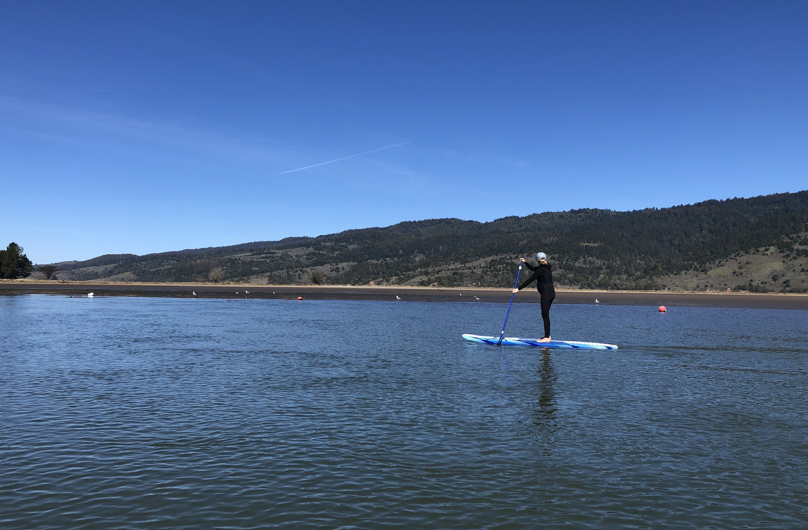
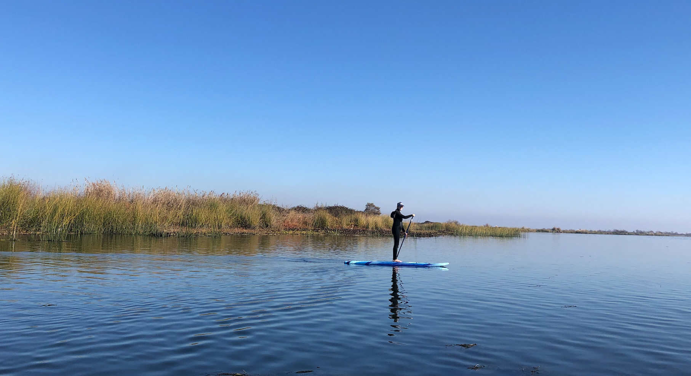
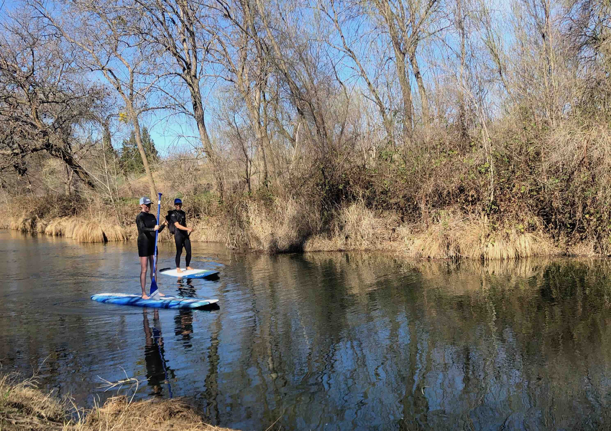

The standup paddleboard (SUP) is a versatile watercraft. It is guaranteed fun wherever there is a big body of water. It is a great tool to explore coastlines, estuaries, rivers, or lakes. It is much easier to transport than kayaks and canoes. It could be launched with minimal water accessibility. When I want more action, I could take it out to face ocean waves!
Equipments¶
I distinguish surfing standup paddleboards from flat water paddleboards. I don’t know much about flat water paddleboards. I had used inflatable, foam, or high end custom made surfing paddleboards on flat water. The all worked great. I had not tried to race or needed to haul overnight camping equipments on paddleboards. As long as the paddleboards have sufficient volume, it should work well enough to paddle around on lakes or up and down wide rivers.
The aspects of a surfing standup paddleboard is hard to summarize. When I was starting, I only needed the board to be large enough to be stable. That was similar to how I learned to surf. A SUP with high volume provides sufficient stability to maneuver to right place at the right time to catch waves. Beyond the beginning stage, there are boards shaped specifically to a paddler’s size, skills, surfing breaks, wave sizes, and style of standup surfing. You should not be reading this blog for tips on how to spend thousands of dollars to perfect your SUP quiver.
I started with the trusty, world-famous Wavestorm foam SUP from Costco. It was a great tool to let me learn to catch waves up to 3-4 ft at Ocean Beach. But it is hard to surf on it. The board is too wide to put a rail into the water unless I stand two ft off center line, but then it would be impossible to go to the other rail. It is massive and heavy. Still, I love that board! Anyone could stand up on it even without any prior experiences. It is practically a boat, but without a hull. I could use it as a kayak substitute in almost all cases. I don’t worry about dinging it because it is foam. It is cheap and has been sold as an amusing 2-pack, as if they are Target underwear. It is the best first SUP everyone should own. Find someone to split that 2-pack with you.
SUP Surfing¶
I got into supping because I wanted an alternative to longboarding. It allows me to cover a lot of ground and fight the lateral currents in my favorite beach break. I catch more waves. I can steer clear of any cluster of surfers to find my personal sand bars. I see more and stay warmer because I am out of the water.
I surf my SUP almost in all spots where others surf, and also surf in many places where people don’t want to surf. I don’t take my SUPs out on bigger days or on crowded point breaks. My main motivation to standup-surf is to have a relaxed time with friends out in the ocean. My favorite standup surfing spots around the Bay area Ocean Beach, Rockaway beach, and Bolinas.
Whenever I go on a camping trip along the coast or anywhere close to a big body of water, I almost always pack my standup paddleboards. It is always a surreal moment to catch the sunset on the water, regardless if there are breaking waves or not.
SUP Exploring¶
Once I had a couple of SUPs in my basement, I discovered these watercrafts offered far more than just another style of surfing ocean waves. I could take my non-surfing friends out to the water, and they would always have a great time. I could use it as a sea kayak to transport crab traps. I could launch them exploring any body of water I see on a map.
A SUP water experience is quite different than kayaking. While kayaking, I usually don’t want to flip the boat. While supping, I usually dress to get wet. I could easily jump into the water to cool off. I see more because I am standing up, but at the same time, I feel closer to the water because there are no barriers.
A SUP is much easier to be transported than kayaks. I could walk my paddle and board easily from my car to launch points. It is easier to load onto my car. I could transport multiple boards for myself and my friends all in one car regardless whether they inflatable or otherwise. A solid roof rack for a car is must.
Here is a selected list of launching spots and trips that I have gone near the San Francisco Bay Area.
-
Picnic Area Crissy Field. Have a picnic with friends here. Launch from the beach. One can paddle toward Fort Mason or Fort Point. Watch out for currents, tide changes, and potentially tricky surf under the Golden Gate Bridge.
-
Bolinas. Great beginning surfing spot. Great crabbing spot. Great spot to just paddle and explore the coastline and the lagoon. There are schools of leopard sharks in the lagoon; I have seen them. There are great whites out there in the ocean; I have not seen those.

-
Drakes Estero. I launched from this dirt parking lot once. It was low tide, so it wasn’t pretty. The two of us had to wade through some serious mud to get out. But once we were out, it was quiet and pure nature. Birds, harbor seals, and wild life everywhere. This water could be closed part of the year to protect the wild life. Don’t get those hefty tickets. There might be better launch spots than the one I link here.
-
Port of Oakland. Don’t laugh. One wouldn’t think that there are launch spots in Port of Oakland. It is a unique place to checkout some giant cranes and go under the Bay Bridge. It is not for everyone.
-
Alameda crab cove or Encinal boat ramp. I was a student at Encinal High School. I always wanted to go explore that coastline on a boat. I didn’t have the information or the money about how to do that when I was young. The water off this coast is not paddled often. You could usually find some quiet time paddling around there. You could paddle to see some retired battleships at Alameda Point.
-
Clipper Cove at Treasure Island. There are not a whole lot to check out here. It is another calm place to get a full exercise on the water.
-
Bradford Island Ferry. There is a large birding paradise just off the main waterways. There are some intermittent levees dividing the water highways and the lake-like body of water. It would be a hard place to launch kayaks off the jetty. One could easily carry down a paddleboard to the rocky jetty and just paddle away.

-
Putah Creek near Winters. The river has many faces. The river landscape and fauna changes often. It has wide and deep sections. It has rapids. It has shallow parts where it could be challenging to kayak but easy to walk our paddleboards across the shallows. The water is clear and calm. There are many kind of water fowls and birds hanging out. If you go there, most likely you will be only people enjoying the water. Spring is the best time.

More Launched Spots¶
I will attempt these in the near future.
- Tomales Bay
- Antioch to Sherman Island
- Brannan Island State Recreation Area
- Alviso Marina County Park